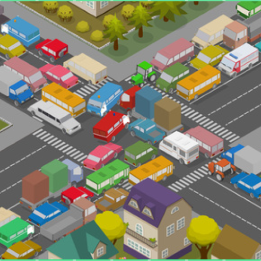
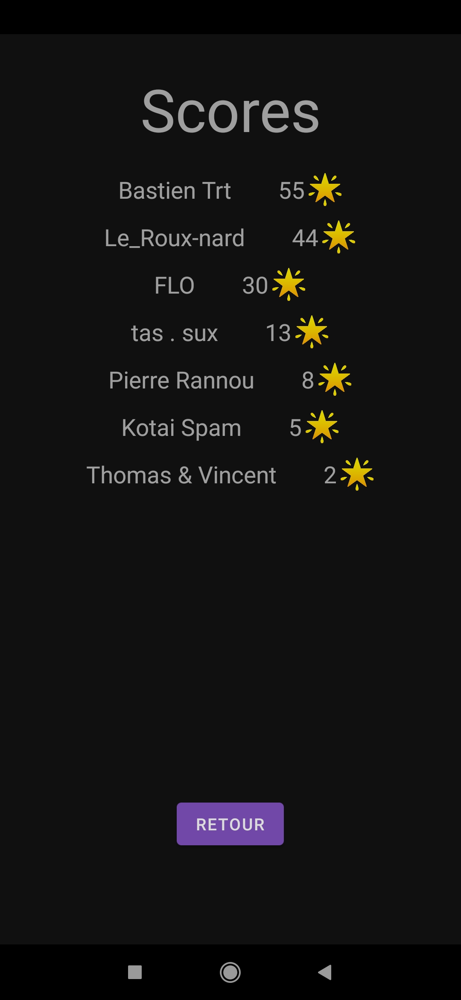
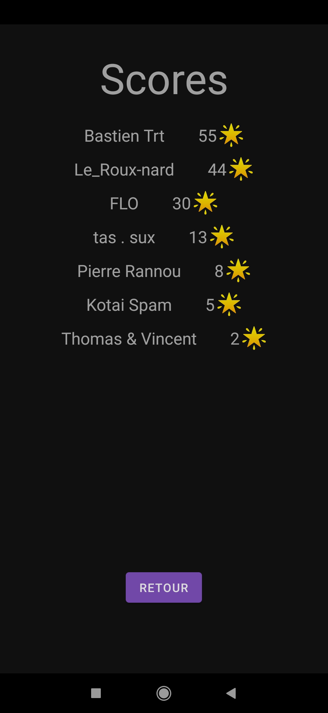

Rush Hour
Description
Le but de ce projet était de réaliser une application Android sous la forme d'un petit jeu. J'ai donc choisi de m'inspirer du jeu de société Rush Hour pour réaliser ce dernier. Il s'agit d'un jeu où le joueur doit faire sortir la voiture blanche du plateau. Seulement d'autres voitures bloquent le passage. Le joueur doit alors faire bouger les autres voitures pour libérer la blanche du plateau en appuyant sur l'avant du véhicule s'il souhaite la bouger vers l'avant et inversement s'il veut la faire se mouvoir vers l'arrière. Le jeu dispose d'un tableau des scores avec un système d'étoiles, de 40 niveaux uniques, ainsi que de musiques !
Aspects Techniques
Pour réaliser ce projet, j'ai utilisé le langage Java et l'environnement de développement Android Studio. J'ai également travaillé avec Firebase pour la gestion des scores et l'enregistrement du nombre d'étoiles. Le jeu propose également une connection à Google la première fois que vous lancez le jeu.
Quelques photos de l'application
 

Où trouver notre projet ?
Si vous voulez voir le code source de ce jeu ou bien même le télécharger pour pouvoir y jouer, vous trouver le repository Github via ce lien.
Maintenance & Veille Technologique
Description
Durant ma formation, j'ai eu l'occasion de faire une maintenance sur cette application afin de l'améliorer. Je me suis donc attaché à trouver une fonctionnalité qui pourrait rendre mon application plus attirante pour les utilisateurs. Il y avait déjà un système de scores dans mon application, si un joueur réussissais un niveau dans un temps imparti il récupérait un certains nombre d'étoiles qui était ensuite sauvegardé sur Firebase. Néanmoins le joueur n'avait pas de limite quant à l'accumulation des étoiles, c'est à dire qu'il pouvait enchainer le même niveau et incrémenter son nombre d'étoiles autant qu'il le souhaitait. J'ai donc décidé d'y remédier en sauvegardant le nombre d'étoiles pour chaque niveau et afficher ensuite sous les boutons de niveau le nombre d'étoile que possède le joueur. J'ai également décidé de nettoyer et de refactoriser un peu de code pour le rendre plus lisible.
Veille Technologique
Afin d'implémenter cette nouvelle fonctionnalité et sauvegarder les scores des utilisateurs, j'ai du me décider entre deux moyens. Le premier était de sauvegarder les scores des utilisateurs directement sur leur stockage local interne, le second était de stocker et d'heberger ces scores sur Firebase.
- Stockage local
- Firebase
Le stockage en local des informations présente plusieurs avantages. En effet, où que l'utilisateur se trouve et même s'il ne dispose pas de connexion internet, ses scores sont sauvegardés sur son appareil. De plus stocker des données sur l'appareil de l'utilisateur est entièrement gratuit et nécessite seulement une permission de la part de l'utilisateur. Enfin, l'accès aux données est rapide et la sécurité renforcée. Néanmoins, stocker ces données en interne prend de la place sur l'appareil de l'utilisateur même si ici, le fichier n'en prend pas beaucoup. Le second inconvénient de ce moyen et qu'on ne peut pas intéragir avec les scores des autres joueurs, ce qui peut poser problème si on souhaite faire un classement des meilleurs scores par exemple.
En revanche, le stockage des données grâce à des services d'hébergement comme Firebase nécessite une connexion à internet pour fonctionner. Cependant, stocker ses données sur Firebase permet d'accéder en temps réel aux scores de tous les joueurs et par conséquent d'établir un classement des meilleurs scores ou des meilleurs temps et ce parmi tous les joueurs jouant à Rush Hour.
Les deux manières de stocker les scores des joueurs ont chacunes leurs atouts et leurs défauts, néanmoins, étant donné que j'ai implémenté une fonctionnalité établissant un classement des meilleurs joueurs avec Firebase, j'ai préféré rester avec ce même moyen de sauvegarde des données, d'autant que je sais comment utiliser l'API proposée par Firebase pour Android.